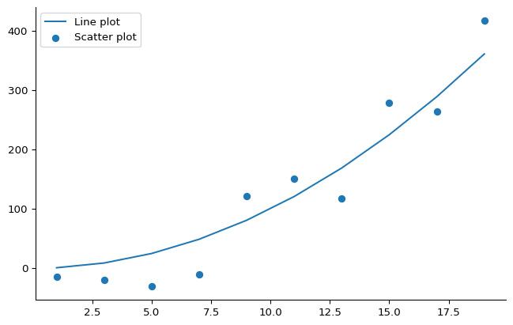

Plotting with matplotlib
Introduction to matplotlib
matplotlib - Powerful Python library for creating visualizations
Key concepts: - Figure: The canvas - Axes: The x-y plotting area - Object-oriented approach (recommended)

Two Plotting Approaches
Pyplot (MATLAB-style):
Object-oriented (Recommended):
--------------------------------------------------------------------------- NameError Traceback (most recent call last) Cell In[3], line 2 1 fig, ax = plt.subplots() ----> 2 ax.plot(x, y) # Plot using axes object NameError: name 'x' is not defined
Why object-oriented? - More explicit control - Better for complex plots - Modern best practice
Basic Plot Types
Customizing Appearance
fig, ax = plt.subplots(figsize=(8, 4))
# Styling options
ax.plot(x, y1, color="slategrey", linestyle="--", linewidth=2)
ax.scatter(x, y2, color="indianred", marker='+', s=60)
# Labels and limits
ax.set_xlabel("X values")
ax.set_ylabel("Y values")
ax.set_xlim(0, 20)
ax.set_title("Customized Plot")Text(0.5, 1.0, 'Customized Plot')Common Style Options
Colors: Named colors, hex codes, RGB - color="red", color="#FF0000", color=(1,0,0)
Line styles: - linestyle="-" (solid), "--" (dashed), ":" (dotted)
Markers: - marker="o" (circle), "+" (plus), "^" (triangle)
Transparency: - alpha=0.7 (70% opaque)
Legends and Annotations
fig, ax = plt.subplots()
ax.plot(x, y1, label="Fitted line", color="blue", linestyle="--")
ax.scatter(x, y2, label="Measurements", color="red", marker='o')
ax.set_xlabel("x")
ax.set_ylabel("y")
ax.legend() # Uses the label parameters
ax.set_title("Plot with Legend")Text(0.5, 1.0, 'Plot with Legend')Histograms
# Generate random data
rng = np.random.default_rng(seed=68)
data1 = rng.normal(0, 1, 5000)
data2 = rng.normal(1, 1.5, 1000)
fig, ax = plt.subplots()
bins = np.arange(-4, 6, 0.3)
ax.hist(data1, bins=bins, alpha=0.7, color="skyblue",
density=True, label="Dataset 1")
ax.hist(data2, bins=bins, alpha=0.7, color="orange",
density=True, label="Dataset 2")
ax.set_xlabel("Value")
ax.set_ylabel("Density")
ax.legend()Histogram Options
Key parameters: - bins: Number or explicit bin edges - alpha: Transparency (0-1) - density: Normalize to show probability density - histtype: ‘bar’, ‘step’, ‘stepfilled’
fig, ax = plt.subplots()
ax.hist(data1, bins=30, alpha=0.6, histtype='step',
color='purple', linewidth=2)(array([ 1., 0., 1., 5., 6., 24., 38., 56., 132., 135., 204.,
272., 376., 442., 452., 515., 502., 494., 393., 305., 229., 160.,
107., 76., 28., 32., 9., 3., 2., 1.]),
array([-4.01393721, -3.75715456, -3.50037191, -3.24358926, -2.9868066 ,
-2.73002395, -2.4732413 , -2.21645865, -1.95967599, -1.70289334,
-1.44611069, -1.18932804, -0.93254538, -0.67576273, -0.41898008,
-0.16219743, 0.09458523, 0.35136788, 0.60815053, 0.86493318,
1.12171584, 1.37849849, 1.63528114, 1.89206379, 2.14884645,
2.4056291 , 2.66241175, 2.9191944 , 3.17597706, 3.43275971,
3.68954236]),
[<matplotlib.patches.Polygon at 0x12ffb8e90>])Multiple Plots on Same Axes
fig, ax = plt.subplots(figsize=(10, 5))
# Multiple data series
x_vals = np.linspace(0, 2*np.pi, 100)
y1 = np.sin(x_vals)
y2 = np.cos(x_vals)
y3 = np.sin(2*x_vals)
ax.plot(x_vals, y1, label="sin(x)")
ax.plot(x_vals, y2, label="cos(x)", linestyle='--')
ax.scatter(x_vals[::10], y3[::10], label="sin(2x)", marker='o')
ax.legend()
ax.set_xlabel("x")
ax.set_ylabel("y")Text(0, 0.5, 'y')Anatomy of a Figure

Matplotlib anatomy shows the components: Figure, Axes, Labels, Legend, Ticks, etc.
Key components: - Figure: Overall container - Axes: Plot area with data - Axis labels: x/y descriptions
- Ticks: Scale markers - Legend: Data series identification
Figure Size and Layout
Best Practices
- Always label your axes
- Use legends for multiple data series
- Choose appropriate plot types for your data
- Control figure size for readability
- Use colors wisely - consider colorblind accessibility
- Keep it simple - don’t over-decorate
# Good example
fig, ax = plt.subplots(figsize=(8, 5))
ax.plot(x, y1, label="Data")
ax.set_xlabel("Time (s)")
ax.set_ylabel("Amplitude (V)")
ax.set_title("Signal vs Time")
ax.legend()--------------------------------------------------------------------------- ValueError Traceback (most recent call last) Cell In[11], line 3 1 # Good example 2 fig, ax = plt.subplots(figsize=(8, 5)) ----> 3 ax.plot(x, y1, label="Data") 4 ax.set_xlabel("Time (s)") 5 ax.set_ylabel("Amplitude (V)") File ~/.pyenv/versions/3.11.1/lib/python3.11/site-packages/matplotlib/axes/_axes.py:1724, in Axes.plot(self, scalex, scaley, data, *args, **kwargs) 1481 """ 1482 Plot y versus x as lines and/or markers. 1483 (...) 1721 (``'green'``) or hex strings (``'#008000'``). 1722 """ 1723 kwargs = cbook.normalize_kwargs(kwargs, mlines.Line2D) -> 1724 lines = [*self._get_lines(self, *args, data=data, **kwargs)] 1725 for line in lines: 1726 self.add_line(line) File ~/.pyenv/versions/3.11.1/lib/python3.11/site-packages/matplotlib/axes/_base.py:303, in _process_plot_var_args.__call__(self, axes, data, *args, **kwargs) 301 this += args[0], 302 args = args[1:] --> 303 yield from self._plot_args( 304 axes, this, kwargs, ambiguous_fmt_datakey=ambiguous_fmt_datakey) File ~/.pyenv/versions/3.11.1/lib/python3.11/site-packages/matplotlib/axes/_base.py:499, in _process_plot_var_args._plot_args(self, axes, tup, kwargs, return_kwargs, ambiguous_fmt_datakey) 496 axes.yaxis.update_units(y) 498 if x.shape[0] != y.shape[0]: --> 499 raise ValueError(f"x and y must have same first dimension, but " 500 f"have shapes {x.shape} and {y.shape}") 501 if x.ndim > 2 or y.ndim > 2: 502 raise ValueError(f"x and y can be no greater than 2D, but have " 503 f"shapes {x.shape} and {y.shape}") ValueError: x and y must have same first dimension, but have shapes (10,) and (100,)
Key Takeaways
- matplotlib is the standard Python plotting library
- Object-oriented approach with
fig, axis recommended - Customization options for colors, styles, markers
- Multiple plot types: line, scatter, histogram
- Always annotate with labels, legends, titles
- Practice with different plot types and styling options